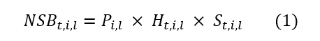
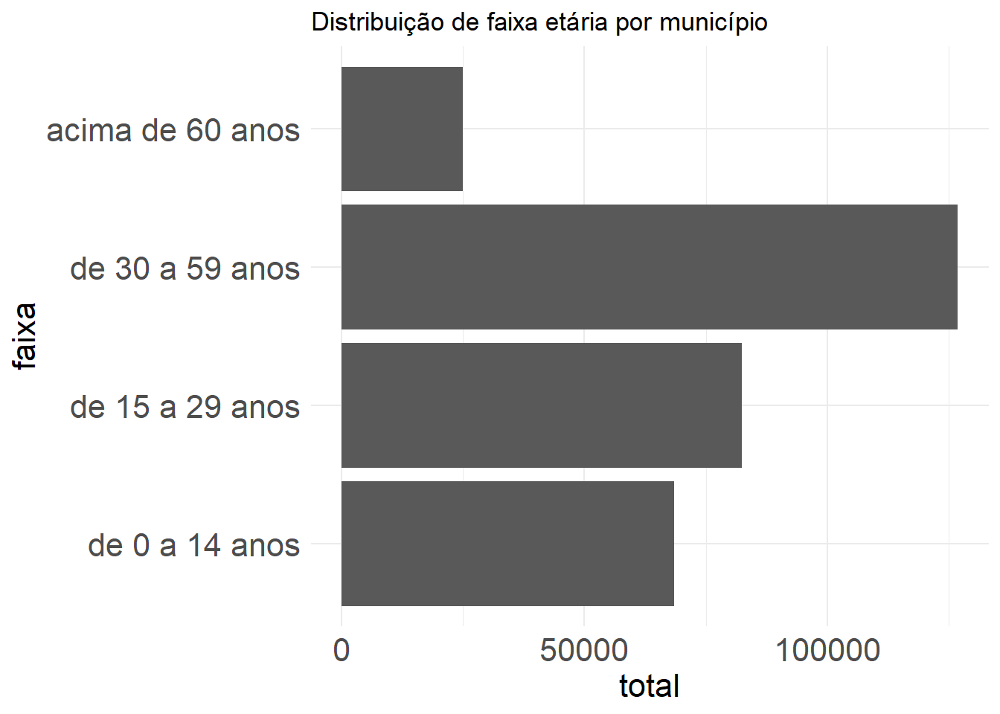
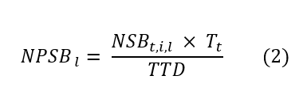
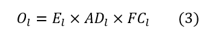
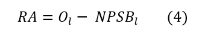
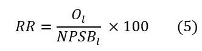
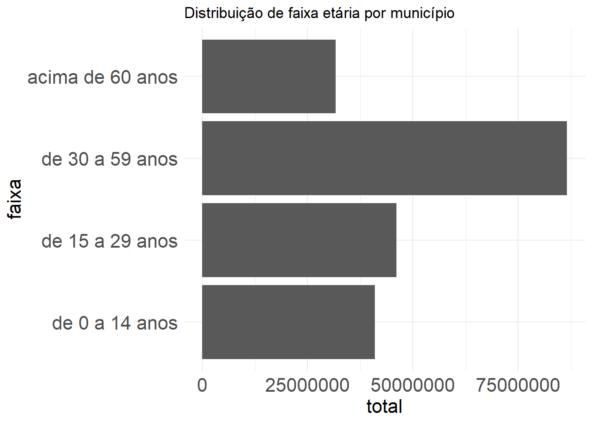
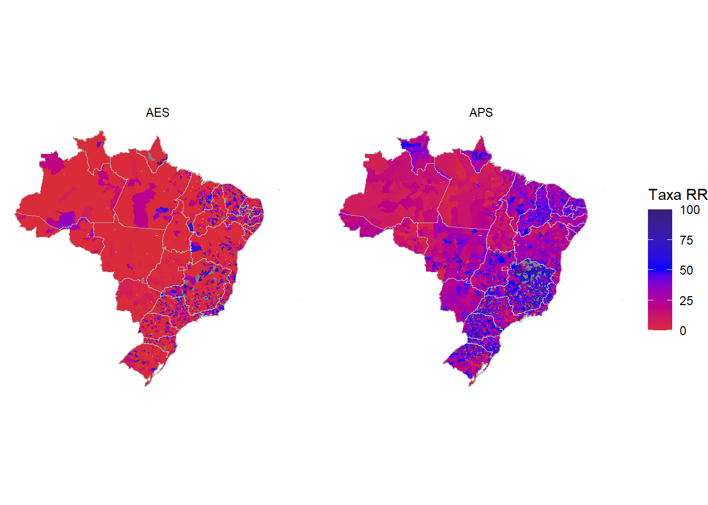
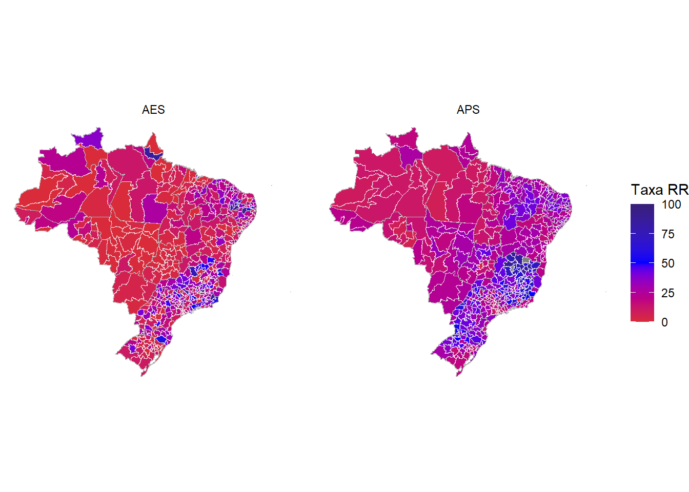

options(scipen = 999)
library(readxl)
library(tidyverse)
library(DT)
library(RODBC)
library(dplyr)
library(sf)
library(ggplot2)
library(geobr)
library(scales)
library(sf)
library(ggrepel)
library(ggspatial)
library(geojsonio)Saúde Bucal - material suplementar
Procedimentos metodológicos
A construção do modelo de planejamento da força de trabalho (PDFT) para saúde bucal baseado em necessidades foi elaborado a partir das orientações de Asamani et al. (2021) que sugerem algumas etapas, que serão descritas com maior detalhamento a seguir:
- Definição de escopo da metodologia em termos de cobertura jurisdicional, objetivos e horizonte temporal;
- Análise da necessidade de saúde bucal com base em aspectos da demografia, epidemiologia e serviços destinados da população a local;
- Tradução do número de serviços em número de profissionais necessários;
- Exploração das implicações em termos de recursos, como a oferta atual de profissionais e custos;
- Análise de sensibilidade para simulação de parâmetros de incerteza;
- Validação de modelo por meio de consulta a stakeholders.
Preparando ambiente do R
Carregando os pacotes necessários para o R.
Este documento possui duas seções: A e B. A primeira é uma plicação reduzida para apenas um município, Palmas-TO. Na seção B, nós ampliamos a aplicação para todo os 5570 municípios no território nacional.
A) Aplicação reduzida para um município
1. Definição de escopo
A metodologia tem como objetivo estimar a força de trabalho atual e necessária de cirurgiões dentistas e técnicos e auxilares de saúde bucal para atuação em municípios brasileiros, a nível de atenção primária, em procedimentos de natureza individual, bem como três procedimentos de natureza especializada: endodontia, prótese e periodontia. Para esta aplicação, usamos apenas Palmas-TO como referência.
2. Análise das necessidades de saúde bucal
A análise da necessidade de saúde bucal (NSB) foi construída a partir de três elementos: distribuição da população por faixa etária (P), prevalência de condições de saúde bucal (H) e procedimentos per capita (S).

Onde:
- NSB = Necessidade de saúde bucal é o número de serviços do tipo t destinados ao atendimento de população de faixa etária i e localidade l;
- P = População por faixa-etária i de uma localidade l;
- H = Prevalência de condições de saúde bucal que levam à necessidade de procedimentos do tipo t por faixa-etária i e dentro de uma localidade l;
- S = Procedimentos per capita do tipo t, para cada faixa-etária i e dentro de uma localidade l.
2.1. Levantando a faixa etária (P)
A distribuição por faixa etária foi construída com base em dados do último censo (2022) e estão disponíveis na página do IBGE. Para fins de exemplificação, vamos trabalhar apenas com o município de referência: Palmas (TO).
# leitura dos dados de populacao
pop_tocantins <-
read_excel("~/GitHub/saude_bucal/01_dados/pop_tocantins.xlsx")
# filtrando dados de palmas, empilhando variavel de faixa etaria e criando uma id que representa cada faixa etaria
pop_palmas <-
pop_tocantins |>
filter(ibge == "1721000") |>
select(ibge, Município, de_0_a_14_anos,
de_15_a_29_anos, de_30_a_59_anos,
acima_de_60_anos) |>
gather(key = "faixa",
value = "total",
3:6) |>
mutate(faixa = gsub("_"," ",faixa)) |>
mutate(ibge = as.character(ibge)) |>
mutate(ibge = substr(ibge, 1, 6)) |>
mutate(id_faixa = case_when(
faixa == "de 0 a 14 anos" ~ 1,
faixa == "de 15 a 29 anos" ~ 2,
faixa == "de 30 a 59 anos" ~ 3,
faixa == "acima de 60 anos" ~ 4))Notamos que a faixa etária de 30 a 59 anos possui maior frequência em relação às demais, conforme gráfico abaixo.
ordem <- c("de 0 a 14 anos",
"de 15 a 29 anos",
"de 30 a 59 anos",
"acima de 60 anos")
pop_palmas$faixa <-
factor(pop_palmas$faixa, levels = ordem)
pop_palmas |>
ggplot(aes(x = faixa, y = total)) + geom_col() +
theme_minimal() + coord_flip() +
theme(axis.title.x = element_text(size = 16),
axis.title.y = element_text(size = 16),
axis.text = element_text(size = 16)) +
ggtitle("Distribuição de faixa etária por município")
O censo possui outras divisões de faixa etárias. Utilizamos estas para padronizar com os dados do próximo parâmetro (H), calculado a partir da pesquisa de SB 2010 (subseção seguinte).
2.2. Cobertura de condições de saúde bucal (H)
O Ministério da Saúde traz uma série de parâmetros para planejamento dos serviços de saúde bucal (Brasil, 2021). Um dos parâmetros é a cobertura de serviços de saúde. A cobertura foi calculada a partir da pesquisa SB 2010 para cada faixa etária e tipo de procedimento conforme a lógica expressa abaixo.
Cabe destacar que, devido à estrutura da SB2010, estes parâmetros foram calculados para capitais de cada estado ou interior da região.
| Área | Expressões usadas para cálculo de cobertura |
|---|---|
| Atenção básica | NT_1 (Número de dentes necessitando de restauração de 1 superfície) + NT_2 (Número de dentes necessitando de restauração de 2 ou mais superfícies) + NT_6 (Número de dentes necessitando de extração) + NT_7 (Número de dentes necessitando de controle de lesão branca) + NT_8 (Número de dentes necessitando de selante) + P_CALC (Prevalência de cálculo) + P_BR (Prevalência de bolsa rasa). Foi então criada a variável COB_AB. Se COB_AB = 0 o indivíduo não necessita de procedimentos de atenção básica, se COB_AB =1 ele necessita. A cobertura de atenção básica foi então estimada pelo percentual de pessoas com COB_AB=1 |
| Endodontia | A cobertura de endodontia foi calculada a partir da variável NT_5 (Número de dentes necessitando de tratamento pulpar + restauração). Foi criada a variável ENDO onde ENDO=0 se NT_5=0 e ENDO=1 se NT_5≠0. Desta forma, a cobertura de endodontia foi então estimada pelo percentual de pessoas com ENDO=1 |
| Periodontia especializada | A cobertura de periodontia especializada foi estimada pelo percentual de pessoas com a variável P_BP (Prevalência de bolsa profunda) = 1 |
| Prótese | A cobertura de prótese foi calculada pelo percentual de pessoas com a variável NECPROT (Necessidade geral de prótese) ≠ 0 |
A cobertura de saúde bucal para cada condição e faixa etária são apresentados abaixo.
# Lendo dados de cobertura para cada procedimento de saude bucal
cobertura_sb <-
read_excel("~/GitHub/saude_bucal/01_dados/cobertura sb.xlsx") |>
mutate(ibge = substr(ibge, 1, 6))
# filtrando para Palmas-TO
cobertura_sb |>
filter(ibge == "172100") |>
select(-ibge,
-id_faixa,
-li_cobertura,
-ls_cobertura) # A tibble: 16 × 4
municipio procedimento faixa_etaria cobertura
<chr> <chr> <chr> <dbl>
1 Palmas Atenção Básica 0 a 14 anos 0.513
2 Palmas Endodontia 0 a 14 anos 0.025
3 Palmas Periodontia 0 a 14 anos 0
4 Palmas Prótese 0 a 14 anos 0
5 Palmas Atenção Básica 15 a 29 anos 0.568
6 Palmas Endodontia 15 a 29 anos 0.043
7 Palmas Periodontia 15 a 29 anos 0
8 Palmas Prótese 15 a 29 anos 0.116
9 Palmas Atenção Básica 30 a 59 anos 0.836
10 Palmas Endodontia 30 a 59 anos 0.072
11 Palmas Periodontia 30 a 59 anos 0.056
12 Palmas Prótese 30 a 59 anos 0.775
13 Palmas Atenção Básica 60 anos ou mais 0.412
14 Palmas Endodontia 60 anos ou mais 0.04
15 Palmas Periodontia 60 anos ou mais 0.024
16 Palmas Prótese 60 anos ou mais 0.648Considerando os dados de população (P) e de cobertura (H), temos os seguintes resultados para população coberta.
# combinando por meio de left_join as tabelas de populacao (IBGE) e cobertura para cada tipo de servico (H)
pop_coberta_palmas <-
pop_palmas |>
left_join(cobertura_sb,
by = c("ibge","id_faixa")) |>
select(ibge, municipio,
faixa, id_faixa,
total, procedimento,
cobertura) |>
mutate(populacao_coberta = cobertura * total) |>
mutate(populacao_coberta = round(populacao_coberta, 2))
# visualizando
pop_coberta_palmas |>
select(municipio, faixa,
total, procedimento,
cobertura, populacao_coberta) # A tibble: 16 × 6
municipio faixa total procedimento cobertura populacao_coberta
<chr> <fct> <dbl> <chr> <dbl> <dbl>
1 Palmas de 0 a 14 anos 68457 Atenção Básica 0.513 35118.
2 Palmas de 0 a 14 anos 68457 Endodontia 0.025 1711.
3 Palmas de 0 a 14 anos 68457 Periodontia 0 0
4 Palmas de 0 a 14 anos 68457 Prótese 0 0
5 Palmas de 15 a 29 anos 82448 Atenção Básica 0.568 46830.
6 Palmas de 15 a 29 anos 82448 Endodontia 0.043 3545.
7 Palmas de 15 a 29 anos 82448 Periodontia 0 0
8 Palmas de 15 a 29 anos 82448 Prótese 0.116 9564.
9 Palmas de 30 a 59 anos 126871 Atenção Básica 0.836 106064.
10 Palmas de 30 a 59 anos 126871 Endodontia 0.072 9135.
11 Palmas de 30 a 59 anos 126871 Periodontia 0.056 7105.
12 Palmas de 30 a 59 anos 126871 Prótese 0.775 98325.
13 Palmas acima de 60 anos 24916 Atenção Básica 0.412 10265.
14 Palmas acima de 60 anos 24916 Endodontia 0.04 997.
15 Palmas acima de 60 anos 24916 Periodontia 0.024 598.
16 Palmas acima de 60 anos 24916 Prótese 0.648 16146.2.3. Parâmetros normativos de procedimentos per capita (S)
Os cálculos de necessidade normativa por procedimento per capita (S) estão disponíveis nos parâmetros do Ministério da Saúde e são baseados na pesquisa de Saúde Bucal (SB 2010).
| Área | Procedimentos |
|---|---|
| Atenção básica | No banco de dados do projeto SB BRASIL 2010 foram transformados os códigos 0 (hígido), A (não examinado) e X (excluído) das variáveis CPI17, CPI11, CPI 27, CPI37, CPI31 e CPI47 em 0 e em 1 para as variáveis que tivessem o código 2 (cálculo) e 3 (bolsa rasa). Ao final essas variáveis foram somadas e a variável NECPERIO_AB criada para armazenar esta soma. Foram somados os valores referentes as variáveis NT_1, NT_2, NT_6, NT_7 e NT_8 formando a variável NEC_AB. Finalmente foram somadas NECPERIO_AB e NEC_AB para se obter a variável NEC_AB_TOTAL. Foi então obtida a média da variável NEC_AB_TOTAL estratificada por idade e domínios geográficos (capitais e interior). |
| Endodontia | Foi obtida a média da variável NT_5 (Número de dentes necessitando de tratamento pulpar + restauração) estratificada por idade e domínios geográficos (capitais e interior). |
| Periodontia | No banco de dados do projeto SB BRASIL 2010 foram transformados os códigos 0 (hígido), A (não examinado) e X (excluído) das variáveis CPI17, CPI11, CPI 27, CPI37, CPI31 e CPI47 em 0 e em 1 para as variáveis que tivessem o código 4 (bolsa profunda). Ao final essas variáveis foram somadas e a variável NECPERIO_ESPEC criada para armazenar esta soma. Foi então obtida a média da variável NECPERIO_ESPEC estratificada por idade e domínios geográficos (capitais e interior). Para as idades de 5 e 12 anos esta variável não foi mensurada no projeto SB BRASIL 2010, portanto não há dados de necessidade normativa para a faixa de 0 a 14 anos. |
| Prótese | A variável NECPROT foi transformada em NUMPROT (número de próteses) como explicitado a seguir:
Foi então obtida a média da variável NUMPROT estratificada por idade e domínios geográficos (capitais e interior). Para as idades de 5 e 12 anos esta variável não foi mensurada no projeto SB BRASIL 2010, portanto não há dados de necessidade normativa para a faixa de 0 a 14 anos. |
O código abaixo acessa dados de produção normativa em Palmas-TO, disponível nos parâmetros do Ministério da Saúde.
# Fazendo a leitura dos dados
producao_normativa <-
read_excel("~/GitHub/saude_bucal/01_dados/cobertura sb.xlsx",
sheet = "Produção normativa",
col_types = c("text","text", "text",
"text", "numeric","numeric",
"numeric", "numeric")) |>
mutate(ibge = substr(ibge, 1, 6))
# Filtrando Palmas-TO
producao_palmas <-
producao_normativa |>
filter(ibge == "172100") |>
select(-municipio,
-li_cobertura,
-ls_cobertura,
-faixa_etaria)
# Juntando a tabela de producao normativa (S) para calcular a NSB ao multiplicar a populacao coberta e producao per capita
necessidades_servicos <-
pop_coberta_palmas |>
left_join(producao_palmas,
by = c("ibge",
"id_faixa",
"procedimento")) |>
mutate(nec_servicos =
populacao_coberta * producao_pc) |>
mutate(nec_servicos =
round(nec_servicos, 2))3. Tradução do número de serviços em número de profissionais necessários
A etapa 3 consiste na tradução do número de serviços, calculado pela equação 1, em número de profissionais necessários (NPSB). Para isso, devem ser considerados dois elementos: produtividade (T) e o tempo total disponível (TTD).

Onde:
- NPSB = Necessidade de profissionais de saúde bucal;
- NSB = Necessidade de saúde bucal contabilizada pelo número de serviços do tipo t destinados ao atendimento de população de faixa etária i e localidade l;
- T = Tempo médio de serviços do tipo t;
- TTD = Tempo total disponível de um profissional ao longo de um ano.
Vamos utilizar como tempo médio de consulta (T) o valor de 25 minutos. Esse valor foi baseado em um levantamento utilizando técnicas de time-motion realizado para aferir o tempo médio de procedimentos executados pela equipe de saúde bucal, em unidades básicas de saúde em São Paulo, Brasil (Bellotti et al, 2024).
O tempo total disponível (TTD) corresponde ao tempo de um profissional deduzidas ausências programáticas (ex.: férias, feriados) e não programáticos (ex.: licenças para tratamento de saúde). Vamos utilizar como referência o TTD estimado em 1576 horas, frequentemente usado para enfermeiros. Infelizmente, não temos estudos que já tenham levantado um TTD para profissionais de saúde bucal no Brasil.
Este resultado indica quantos cirurgiões dentistas por mês são necessários ao longo de um ano para cobrir as necessidades da população.
# calculando a necessidade de profissionais utilizando os parametros de tempo e de TTD
necessidades_prof_palmas <-
necessidades_servicos |>
mutate(nec_prof =
(nec_servicos * 25/60)/1576) |>
mutate(nivel = if_else(
procedimento == "Atenção Básica",
"APS",
"AES")) |>
group_by(ibge, municipio, nivel) |>
summarise(necessidade = sum(nec_prof)) |>
mutate(necessidade = round(necessidade, 2))
necessidades_prof_palmas |>
ungroup() |>
select(-ibge) # A tibble: 2 × 3
municipio nivel necessidade
<chr> <chr> <dbl>
1 Palmas AES 34.4
2 Palmas APS 159. 4. Exploração das implicações em termos de recursos, como a oferta atual de profissionais e custos
O próximo passo consiste em algumas etapas, sendo elas:
- Obtenção da oferta de profissionais;
- Cálculo de valor líquido da oferta;
- Comparação da oferta com necessidades;
4.1. Obtenção da oferta de profissionais
A oferta de profissionais foi acessada usando o Cadastro Nacional de Estabelecimentos de Saúde - tabela Profissionais (CNES-PF).
Como profissionais podem ter múltiplos vínculos, padronizou-se a contagem por meio do Full-time equivalent (FTE), com base na carga horária de contrato.
# codigo para acessar dados de datalake proprio
dremio_host <- Sys.getenv("endereco")
dremio_port <- Sys.getenv("port")
dremio_uid <- Sys.getenv("uid")
dremio_pwd <- Sys.getenv("datalake")
channel <- odbcDriverConnect(sprintf("DRIVER=Dremio Connector;
HOST=%s;
PORT=%s;
UID=%s;
PWD=%s;
AUTHENTICATIONTYPE=Basic Authentication;
CONNECTIONTYPE=Direct",
dremio_host,
dremio_port,
dremio_uid,
dremio_pwd))
query <- 'SELECT * FROM "Analytics Layer".Infraestrutura.Profissionais."TSB/ASB e cirurgiões dentistas em APS e AES"'
oferta <- sqlQuery(channel, query,
as.is = TRUE) A consulta SQL que gerou esta tabela de dados está descrito abaixo.
Acessamos dados de todos os municípios para a COMPETEN (mês e ano) de janeiro de 2024. Foram acessados dados de Cirurgiões dentistas e Técnicos e Auxiliares de Saúde Bucal. Acessamos registros de profissionais atuantes no SUS e na saúde suplementar a partir da variável PROF_SUS. Para uma primeira análise vamos fazer simulações apenas para o recorte de profissionais SUS.
Foram acessados dados dos seguintes tipos de unidade (TP_UNID):
- Atenção Primária à Saúde (APS)
- 01 - Posto de saúde
- 02 - Centro de Saúde/Unidade Básica
- 32 - Unidade Móvel Fluvial
- 40 - Unidade Móvel Terrestre
- Atenção Especializada à Saúde (AES)
- 36 - Clínica/Centro de Especialidade
- 73 - Pronto atendimento
- 04 - Policlínica
- 22 - Consultório Isolado
Não foi incluída a força de trabalho atuante em hospitais, tendo em vista o escopo da metodologia.
WITH CH_PROFISSIONAIS AS(
SELECT CODUFMUN,
COMPETEN,
PROF_SUS,
NIVEL,
CATEGORIA,
HORAAMBULATORIAL,
HORAHOSPITALAR,
HORAOUTRO,
HORAAMBULATORIAL + HORAHOSPITALAR + HORAOUTRO AS HORA
FROM(
SELECT CODUFMUN,
COMPETEN,
PROF_SUS,
CASE
WHEN TP_UNID = '01' OR
TP_UNID = '02' OR
TP_UNID = '32' OR
TP_UNID = '40' THEN 'APS'
WHEN TP_UNID = '36' OR
TP_UNID = '73' OR
TP_UNID = '04' OR
TP_UNID = '22' THEN 'ESPECIALIZADO'
END NIVEL,
CASE
WHEN substr(CBO, 1, 4) = '2232' THEN 'Cirurgião-dentista'
WHEN substr(CBO, 1, 4) = '3224' THEN 'Técnico ou Auxiliar de Saúde Bucal'
END CATEGORIA,
SUM(HORA_AMB) AS HORAAMBULATORIAL,
SUM(HORAHOSP) AS HORAHOSPITALAR,
SUM(HORAOUTR) AS HORAOUTRO
FROM Dados.cnes.PF
WHERE (substr(CBO, 1, 4) = '2232' OR
substr(CBO, 1, 4) = '3224') AND
COMPETEN = '202401'
GROUP BY CODUFMUN, COMPETEN, NIVEL, PROF_SUS, CBO
)
)
SELECT p.CODUFMUN,
q.municipio,
q.uf_sigla,
q.latitude,
q.longitude,
q.cod_regsaud,
q.cod_macrorregiao,
q.regiao_saude,
q.macrorregiao_pad,
p.COMPETEN,
p.PROF_SUS,
p.NIVEL,
p.CATEGORIA,
p.HORA,
p.HORA/40 AS FTE40
FROM CH_PROFISSIONAIS p
LEFT JOIN
"Analytics Layer".Territorial."Municípios - Hierarquia Completa" q
ON CAST(P.CODUFMUN AS INTEGER) = q.cod_municipio Vamos filtrar apenas para acessar dados de Palmas (TO) e profissionais atuando no SUS.
oferta$FTE40 <- as.numeric(oferta$FTE40)
# filtro para Palmas-TO e profissionais atuando no SUS
oferta_palmas <-
oferta |>
filter(CODUFMUN == "172100" &
PROF_SUS == "1") |>
group_by(CODUFMUN, CATEGORIA, NIVEL) |>
summarise(FTE40 = sum(FTE40)) |>
filter(NIVEL != "NA") |>
mutate(NIVEL = if_else(NIVEL == "APS",
"APS",
"AES")) 4.2. Cálculo de valor líquido da oferta
O cálculo do valor líquido da oferta é feito por meio da fórmula 3:

Onde:
- O = Oferta de profissionais em dada localidade l;
- E = Total de profissionais atuantes em estabelecimentos de saúde em dada localidade l;
- AD = Percentual da carga de trabalho dedicada a atividades diretas (%);
- FC = Percentual da carga de trabalho dedicada a um foco clínico (%)
Não temos números associados a AD e FC. Vamos utilizar os valores abaixo, no entanto, já pensando na simulação mais a frente.
# calculando a oferta de profissionais apos deducao de carga de trabalho dedicada a atividades diretas e ao foco clinico.
oferta_palmas <-
oferta_palmas |>
mutate(FTE_40_direto = FTE40 * 0.80) |>
mutate(FTE_40_linha = FTE_40_direto * 0.80)
oferta_palmas# A tibble: 4 × 6
# Groups: CODUFMUN, CATEGORIA [2]
CODUFMUN CATEGORIA NIVEL FTE40 FTE_40_direto FTE_40_linha
<chr> <chr> <chr> <dbl> <dbl> <dbl>
1 172100 Cirurgião-dentista APS 99 79.2 63.4
2 172100 Cirurgião-dentista AES 33 26.4 21.1
3 172100 Técnico ou Auxiliar de Saúde … APS 78 62.4 49.9
4 172100 Técnico ou Auxiliar de Saúde … AES 16 12.8 10.24.3. Implicações de resultados em termos quantitativos
Por fim, são feitos os cálculos entre oferta e necessidade. São aplicadas duas métricas:
Resultado Absoluto (RA), que é referente à diferença entre oferta e necessidade, conforme equação 4;
Resultado Relativo (RR), que se refere à diferença percentual entre oferta e necessidade, conforme equação 5.

Onde:
- RA = Resultado absoluto;
- O = Oferta de cirurgiões-dentistas em dada localidade l;
- NPSB = Necessidade de cirurgiões-dentistas em dada localidade l;

Onde:
- RR = Resultado relativo;
- O = Oferta de cirurgiões-dentistas em dada localidade l;
- NPSB = Necessidade de cirurgiões-dentistas em dada localidade l;
Os cálculos são realizados conforme os scripts:
# acessando oferta apenas para cirurgioes dentistas
oferta_palmas_cd <- oferta_palmas |>
filter(CATEGORIA == "Cirurgião-dentista")
# juntando os resultados de necessidade e oferta a partir da variavel do municipio e nivel de atencao. Em sequencia, comparando necessidade e oferta
oferta_vs_demanda <-
necessidades_prof_palmas |>
left_join(oferta_palmas_cd,
by = c("ibge"="CODUFMUN",
"nivel" = "NIVEL")) |>
mutate(ra = FTE_40_linha - necessidade,
rr = (FTE_40_linha/necessidade) * 100) |>
mutate(ra = round(ra, 2),
rr = round(rr, 2))
# apresentando parte dos resultados
oferta_vs_demanda |>
mutate(necessidade = round(necessidade, 2)) |>
mutate(FTE_40_linha = round(FTE_40_linha, 2)) |>
select(municipio,
nivel, necessidade,
FTE_40_linha, rr, ra) Adding missing grouping variables: `ibge`# A tibble: 2 × 7
# Groups: ibge, municipio [1]
ibge municipio nivel necessidade FTE_40_linha rr ra
<chr> <chr> <chr> <dbl> <dbl> <dbl> <dbl>
1 172100 Palmas AES 34.4 21.1 61.3 -13.3
2 172100 Palmas APS 159. 63.4 39.8 -96.04.4. Implicações de resultados em termos financeiros
Ao final, sugere-se o cálculo do impacto financeiro desta lacuna. Isso pode ser feito multiplicando o RA ao salário médio de cirurgiões dentistas em Palmas-TO adicionado a um custo trabalhista.
De acordo com dados da Pesquisa Nacional de Amostragem por Domicílio contínua (PNADc) do Instituto Brasileiro de Geografia e Estatística (IBGE), o salário médio é na ordem de R$ 4000. Adicionado a um fator para adicionar o custo trabalhista (1.42), tem-se os resultados na tabela a seguir.
custo_palmas <-
oferta_vs_demanda |>
mutate(custo_mensal = ra * (-1) * (4000 * 1.42)) |>
select(ibge, municipio, nivel, CATEGORIA,
custo_mensal)
custo_palmas # A tibble: 2 × 5
# Groups: ibge, municipio [1]
ibge municipio nivel CATEGORIA custo_mensal
<chr> <chr> <chr> <chr> <dbl>
1 172100 Palmas AES Cirurgião-dentista 75658.
2 172100 Palmas APS Cirurgião-dentista 545110.B) Aplicação para Brasil
A mesma metodologia utilizada para o munícipio de Palmas-TO foi escalada para cada município brasileiro. Abaixo detalhamos a análise estruturada em etapas.
5. Análise das necessidades de saúde bucal para o Brasil
A análise da necessidade de saúde bucal (NSB) foi construída a partir de três elementos: distribuição da população por faixa etária (P), prevalência de condições de saúde bucal (H) e procedimentos per capita (S).
5.1. Levantando a faixa etária (P) - Brasil
A distribuição por faixa etária (P) foi construída com base em dados do último censo (2022) e estão disponíveis na página do IBGE.
# lendo dados do censo
pop_brasil <- read_excel("~/GitHub/saude_bucal/01_dados/populacao_municipio_censo_completa.xlsx")
# tratando para ajustar cada faixa etaria
pop_brasil_tratado <- pop_brasil |>
select(cod_municipiodv,
ibge_sb, municipio,
de_0_a_14_anos,
de_15_a_29_anos,
de_30_a_59_anos,
acima_de_60_anos) |>
gather(key = "faixa",
value = "total",
4:7) |>
mutate(faixa = gsub("_"," ",
faixa)) |>
mutate(ibge = as.character(ibge_sb)) |>
mutate(ibge = substr(ibge_sb, 1, 6)) |>
mutate(cod_municipiodv =
as.character(cod_municipiodv)) |>
mutate(cod_mun_loc = cod_municipiodv) |>
mutate(cod_municipiodv =
substr(cod_municipiodv, 1, 6)) |>
mutate(id_faixa =
case_when(faixa == "de 0 a 14 anos" ~ 1,
faixa == "de 15 a 29 anos" ~ 2,
faixa == "de 30 a 59 anos" ~ 3,
faixa == "acima de 60 anos" ~ 4))Plotando a informação de faixa etária. Nota-se que a faixa etária com maior frequência é de 30 a 59 anos.
ordem <- c("de 0 a 14 anos",
"de 15 a 29 anos",
"de 30 a 59 anos",
"acima de 60 anos")
pop_brasil_tratado$faixa <- factor(pop_brasil_tratado$faixa,
levels = ordem)
pop_brasil_tratado |>
ggplot(aes(x = faixa,
y = total)) +
geom_col() +
theme_minimal() +
coord_flip() +
theme(axis.title.x = element_text(size = 16),
axis.title.y = element_text(size = 16),
axis.text = element_text(size = 16)) +
ggtitle("Distribuição de faixa etária por município")
5.2. Prevalência de condições de saúde bucal (H) - Brasil
Vamos fazer a leitura dos dados de cobertura de procedimentos para cada faixa etária em todos os municípios do Brasil para, em sequência, calcular a prevalência de condições de saúde bucal (H).
Conforme pode ser observado na tabela, as capitais de todos os estados possuem valores de cobertura associados. No entanto, municípios do interior não possuem uma cobertura individualizada, mas sim um parâmetro correspondente ao interior da região (ex.: o município de Formosa-GO fica no interior da Região Centro-Oeste, logo usamos o parâmetro de interior da Região Centro-Oeste).
# Lendo dados
cobertura_sb <-
read_excel("~/GitHub/saude_bucal/01_dados/cobertura sb.xlsx",
sheet = "Cobertura") |>
mutate(ibge = substr(ibge, 1, 6))
# apresentando dados
cobertura_sb |>
select(-ibge,
-id_faixa,
-li_cobertura,
-ls_cobertura) # A tibble: 512 × 4
municipio procedimento faixa_etaria cobertura
<chr> <chr> <chr> <dbl>
1 Porto Velho Atenção Básica 0 a 14 anos 0.69
2 Porto Velho Endodontia 0 a 14 anos 0.074
3 Porto Velho Periodontia 0 a 14 anos 0
4 Porto Velho Prótese 0 a 14 anos 0
5 Rio Branco Atenção Básica 0 a 14 anos 0.625
6 Rio Branco Endodontia 0 a 14 anos 0.071
7 Rio Branco Periodontia 0 a 14 anos 0
8 Rio Branco Prótese 0 a 14 anos 0
9 Manaus Atenção Básica 0 a 14 anos 0.661
10 Manaus Endodontia 0 a 14 anos 0.138
# ℹ 502 more rowsNo script abaixo, juntamos a população de cada município à respectiva cobertura.
# tratando os dados devido ao padrao de codigo IBGE de 7 digitos em algumas bases
pop_brasil_tratado <-
pop_brasil_tratado |>
mutate(ibge_sb =
as.character(ibge_sb)) |>
mutate(ibge_sb =
str_sub(ibge_sb,
start = 1,
end = 6))
cobertura_sb$ibge <- as.character(cobertura_sb$ibge)
# juntando base de populacao e cobertura de saude bucal
pop_coberta_br <-
pop_brasil_tratado |>
left_join(cobertura_sb,
by = c("ibge_sb" = "ibge",
"id_faixa" = "id_faixa")) |>
select(ibge, ibge_sb,
municipio.x,
faixa, id_faixa,
total, procedimento, cobertura,
cod_municipiodv, cod_mun_loc) |>
rename(municipio = municipio.x) |>
mutate(populacao_coberta = cobertura * total) |>
mutate(populacao_coberta = round(populacao_coberta, 2))5.3. Parâmetros normativos de procedimentos per capita (S) - BRASIL
O próximo passo consiste em juntar as tabelas com o população coberta e a necessidade normativa para cada tipo de procedimento (S). Isso levará ao resultado da necessidade de saúde bucal (NSB), que corresponde ao total de serviços necessários para atender cada faixa etária.
# leitura do dado de producao normativa (S)
producao_normativa_br <-
read_excel("~/GitHub/saude_bucal/01_dados/cobertura sb.xlsx",
sheet = "Produção normativa",
col_types = c("text","text",
"text","text",
"numeric","numeric",
"numeric","numeric")) |>
mutate(ibge = substr(ibge, 1, 6))
producao_brasil <- producao_normativa_br |>
select(-municipio,
-li_cobertura,
-ls_cobertura,
-faixa_etaria)
# juntando populacao coberta e producao normativa para calcular o total de servicos necessarios
necessidades_servicos_br <- pop_coberta_br |>
left_join(producao_brasil,
by = c("ibge" = "ibge",
"id_faixa",
"procedimento")) |>
mutate(nec_servicos =
populacao_coberta * producao_pc) |>
mutate(nec_servicos =
round(nec_servicos, 2))
necessidades_servicos_br |>
select(municipio,
procedimento,
faixa,
nec_servicos) # A tibble: 92,304 × 4
municipio procedimento faixa nec_servicos
<chr> <chr> <fct> <dbl>
1 Brasília Atenção Básica de 0 a 14 anos 287239.
2 Brasília Endodontia de 0 a 14 anos 996.
3 Brasília Periodontia de 0 a 14 anos 0
4 Brasília Prótese de 0 a 14 anos 0
5 Goiânia Atenção Básica de 0 a 14 anos 1283387.
6 Goiânia Endodontia de 0 a 14 anos 852.
7 Goiânia Periodontia de 0 a 14 anos 0
8 Goiânia Prótese de 0 a 14 anos 0
9 Abadia de Goiás Atenção Básica de 0 a 14 anos 9455.
10 Abadia de Goiás Endodontia de 0 a 14 anos 93.4
# ℹ 92,294 more rows6. Tradução do número de serviços em número de profissionais necessários - BRASIL
Uma vez que sabemos a necessidade de saúde bucal (NSB) com base na distribuição da população por faixa etária (P), prevalência de condições de saúde bucal (H) e procedimentos per capita (S) podemos traduzir o número de serviços em profissionais necessários.
# calculando a necessidade de profissionais com base no total no tempo medio de procedimentos e TTD
necessidades_prof_br <-
necessidades_servicos_br |>
mutate(nec_prof =
(nec_servicos * 25/60)/1576) |>
mutate(nivel = if_else(
procedimento == "Atenção Básica",
"APS",
"AES")) |>
group_by(ibge, municipio,
nivel, cod_municipiodv,
cod_mun_loc) |>
summarise(necessidade = sum(nec_prof)) |>
mutate(necessidade = round(necessidade, 2))`summarise()` has grouped output by 'ibge', 'municipio', 'nivel',
'cod_municipiodv'. You can override using the `.groups` argument.necessidades_prof_br |>
ungroup() |>
select(municipio,
nivel,
necessidade)# A tibble: 11,140 × 3
municipio nivel necessidade
<chr> <chr> <dbl>
1 Porto Velho AES 57.6
2 Porto Velho APS 431.
3 Rio Branco AES 69.6
4 Rio Branco APS 221.
5 Abaetetuba AES 26.6
6 Abaetetuba APS 160.
7 Abel Figueiredo AES 1.08
8 Abel Figueiredo APS 5.98
9 Abreulândia AES 0.98
10 Abreulândia APS 4.91
# ℹ 11,130 more rows7. Exploração das implicações em termos de recursos, como a oferta atual de profissionais e custos
O próximo passo consiste em algumas etapas, sendo elas:
- Obtenção da oferta de profissionais;
- Cálculo de valor líquido da oferta;
- Comparação da oferta com necessidades;
7.1. Obtenção da oferta de profissionais
O código abaixo traz o script de acesso a dados do CNES-PF para cirurgiões-dentistas e técnicos/auxiliares de saúde bucal, usando infraestrutura própria.
# codigo para acessar dados de um datalake
dremio_host <- Sys.getenv("endereco")
dremio_port <- Sys.getenv("port")
dremio_uid <- Sys.getenv("uid")
dremio_pwd <- Sys.getenv("datalake")
channel <- odbcDriverConnect(sprintf("DRIVER=Dremio Connector;
HOST=%s;
PORT=%s;
UID=%s;
PWD=%s;
AUTHENTICATIONTYPE=Basic Authentication;
CONNECTIONTYPE=Direct",
dremio_host,
dremio_port,
dremio_uid,
dremio_pwd))
query <- 'SELECT * FROM "Analytics Layer".Infraestrutura.Profissionais."TSB/ASB e cirurgiões dentistas em APS e AES"'
oferta <- sqlQuery(channel, query,
as.is = TRUE)O script abaixo agrupa o total da força de trabalho por nível de atenção e município.
oferta$FTE40 <- as.numeric(oferta$FTE40)
oferta_brasil <-
oferta |>
filter(PROF_SUS == "1") |>
group_by(CODUFMUN, CATEGORIA, NIVEL) |>
summarise(FTE40 = sum(FTE40)) |>
filter(NIVEL != "NA") |>
mutate(NIVEL = if_else(NIVEL == "APS","APS","AES")) 7.2. Cálculo de valor líquido da oferta
O próximo passo consiste na deducação da força de trabalho associada a atividades indiretas, bem como o percentual associado à linha de cuidado. Os valores usados foram de 80%.
oferta_brasil <-
oferta_brasil |>
mutate(FTE_40_direto = FTE40 * 0.80) |>
mutate(FTE_40_linha = FTE_40_direto * 0.80)
oferta_brasil |>
ungroup() |>
select(CATEGORIA, NIVEL, FTE40,
FTE_40_direto, FTE_40_linha)# A tibble: 14,301 × 5
CATEGORIA NIVEL FTE40 FTE_40_direto FTE_40_linha
<chr> <chr> <dbl> <dbl> <dbl>
1 Cirurgião-dentista APS 2 1.6 1.28
2 Técnico ou Auxiliar de Saúde Bucal APS 2 1.6 1.28
3 Cirurgião-dentista APS 10 8 6.4
4 Cirurgião-dentista AES 4 3.2 2.56
5 Técnico ou Auxiliar de Saúde Bucal APS 11 8.8 7.04
6 Técnico ou Auxiliar de Saúde Bucal AES 2 1.6 1.28
7 Cirurgião-dentista APS 1 0.8 0.64
8 Técnico ou Auxiliar de Saúde Bucal APS 1 0.8 0.64
9 Cirurgião-dentista APS 5 4 3.2
10 Cirurgião-dentista AES 8 6.4 5.12
# ℹ 14,291 more rows7.3. Implicações de resultados
Agora vamos comparar a força de trabalho disponível com a necessidade. Primeiro, apresentamos os resultados para cirurgiões-dentistas. Depois apresentamos para técnicos e auxiliares de saúde bucal.
7.3.1. Resultados para cirurgiões-dentistas
O script a seguir calcula os resultados para Cirurgiões dentistas por município.
oferta_brasil_cd <-
oferta_brasil |>
filter(CATEGORIA == "Cirurgião-dentista")
cd_oferta_vs_demanda_br <-
necessidades_prof_br |>
left_join(oferta_brasil_cd,
by = c("cod_municipiodv"="CODUFMUN",
"nivel" = "NIVEL"))
cd_oferta_vs_demanda_br$FTE_40_linha[is.na(cd_oferta_vs_demanda_br$FTE_40_linha)] <- 0
cd_oferta_vs_demanda_br$FTE40[is.na(cd_oferta_vs_demanda_br$FTE40)] <- 0
cd_oferta_vs_demanda_br$FTE_40_direto[is.na(cd_oferta_vs_demanda_br$FTE_40_direto)] <- 0
cd_oferta_vs_demanda_br <-
cd_oferta_vs_demanda_br |>
mutate(ra = FTE_40_linha - necessidade,
rr = (FTE_40_linha/necessidade) * 100) |>
mutate(ra = round(ra, 2),
rr = round(rr, 2)) |>
mutate(necessidade = round(necessidade, 2)) |>
mutate(FTE_40_linha = round(FTE_40_linha, 2)) |>
select(ibge, municipio,
nivel, necessidade,
FTE_40_linha, rr, ra, cod_municipiodv,
cod_mun_loc)
cd_oferta_vs_demanda_br |>
select(-cod_mun_loc,
-cod_municipiodv)# A tibble: 11,140 × 8
# Groups: ibge, municipio, nivel, cod_municipiodv [11,140]
cod_municipiodv ibge municipio nivel necessidade FTE_40_linha rr ra
<chr> <chr> <chr> <chr> <dbl> <dbl> <dbl> <dbl>
1 110020 110020 Porto Ve… AES 57.6 28.8 50.0 -28.8
2 110020 110020 Porto Ve… APS 431. 62.7 14.6 -368.
3 120040 120040 Rio Bran… AES 69.6 28.2 40.4 -41.5
4 120040 120040 Rio Bran… APS 221. 38.4 17.4 -182.
5 150010 130000 Abaetetu… AES 26.6 1.92 7.2 -24.7
6 150010 130000 Abaetetu… APS 160. 20.5 12.8 -139.
7 150013 130000 Abel Fig… AES 1.08 0 0 -1.08
8 150013 130000 Abel Fig… APS 5.98 1.28 21.4 -4.7
9 170025 130000 Abreulân… AES 0.98 0 0 -0.98
10 170025 130000 Abreulân… APS 4.91 1.28 26.1 -3.63
# ℹ 11,130 more rowsVamos gerar a visualização usando um mapa cloroplético. Alguns municípios não estão coloridos, pois o percentual excede 100%.
mun <- read_municipality(code_muni="all",
year=2022,
showProgress = FALSE)
mun <- mun |>
mutate(code_muni =
as.character(code_muni))
mun2 <- cd_oferta_vs_demanda_br |>
left_join(mun, by= c("cod_mun_loc" = "code_muni"))
mun_sf <- st_as_sf(mun2)
estados_br <- read_state(year = 2020,
showProgress = FALSE)
ggplot() +
geom_sf(data = mun_sf, aes(fill = rr),
color = NA) +
scale_fill_gradientn(colors = c("#D92B3A",
"blue",
"#371F78"),
values = rescale(c(0,50,100)),
limits = c(0, 100)) +
geom_sf(data = estados_br,
fill = NA,
color = "#B8B8B8", size = 0.1) +
labs(fill = "Taxa RR") +
theme_void() +
facet_grid(~nivel)De acordo com os resultados das tabelas, nós temos alguns poucos municípios que possuem um resultado relativo muito elevado, na ordem de 600%. Isso significa que a oferta é muito superior à necessidade. Isso ocorre geralmente em municípios muito pequenos. O município de Cachoeira Dourada - MG possui apenas 2706 habitantes. Com bases nos cálculos, a necessidade é de 0,31 profissionais para atenção especializada. No entanto, o município conta com 1,92 profissionais. Por isso a diferença elevada. No mapa acima, restringimos apenas até 100% de resultado relativo.
Mas também podemos incluir outras formas de agregação da informação, a exemplo dos dados apresentados por região de saúde.
# lendo a base de hierarquia de localidades para juntar os municipios as respectivas regioes de saude e assim agregar os dados por regiao de saude
hierarquia_municipios <-
read_csv("~/GitHub/saude_bucal/01_dados/hierarquia_atualizada.csv")
hierarquia <-
hierarquia_municipios |>
select(cod_municipiodv,
uf_sigla,
regiao,
cod_regsaud,
regiao_saude)
hierarquia$cod_municipiodv <-
as.character(hierarquia$cod_municipiodv)
cd_oferta_vs_demanda_regiao_saude <-
cd_oferta_vs_demanda_br |>
left_join(hierarquia,
by = c("cod_mun_loc"="cod_municipiodv")) |>
group_by(nivel, cod_regsaud, uf_sigla,
regiao_saude) |>
summarise(necessidade = sum(necessidade),
oferta = sum(FTE_40_linha)) |>
mutate(ra = oferta - necessidade,
rr = (oferta/necessidade) * 100) |>
mutate(ra = round(ra, 2),
rr = round(rr, 2))Script para criar o mapa de regiões de saúde.
estados_br <- read_state(year = 2020)
spdf <-
geojson_read("~/GitHub/saude_bucal/01_dados/shape_file_regioes_saude.json", what = "sp")
spdf_fortified <- sf::st_as_sf(spdf)
# Definir limites de longitude e latitude para focar no Brasil
limite_long <- c(-75, -28) # limites de longitude
limite_lat <- c(-33, 4) # limites de latitude
# Criar o mapa
mapa_rs <-
cd_oferta_vs_demanda_regiao_saude |>
left_join(spdf_fortified,
by = c("cod_regsaud"="reg_id"))
# Adicionar geometria se não existir
if (!"geometry" %in% names(mapa_rs)) {
mapa_rs <- st_as_sf(mapa_rs,
coords = c("longitude", "latitude"),
crs = 4326)
}
ggplot() +
geom_sf(data = mapa_rs,
aes(fill = rr, geometry = geometry),
color = "#e9e9e9") +
geom_sf(data = estados_br,
fill = NA,
color = "#B8B8B8",
size = 0.1) +
scale_fill_gradientn(colors = c("#D92B3A",
"blue",
"#371F78"),
values =
rescale(c(0,50,100)),
limits = c(0, 100)) +
labs(fill = "Taxa RR") +
theme_void() +
facet_grid(~nivel)7.3.2. Results for Oral Health Technician and Assistant
Abaixo vamos calcular os percentuais absolutos e relativos para TSB e ASB assumindo uma necessidade de um profissional desta categoria para cada cirurgião dentista.
oferta_brasil_tsb_asb <-
oferta_brasil |>
filter(CATEGORIA == "Técnico ou Auxiliar de Saúde Bucal")
cd_oferta_vs_demanda_br_tsb_asb <-
necessidades_prof_br |>
left_join(oferta_brasil_tsb_asb,
by = c("cod_municipiodv"="CODUFMUN",
"nivel" = "NIVEL"))
cd_oferta_vs_demanda_br_tsb_asb$FTE_40_linha[is.na(cd_oferta_vs_demanda_br_tsb_asb$FTE_40_linha)] <- 0
cd_oferta_vs_demanda_br_tsb_asb$FTE40[is.na(cd_oferta_vs_demanda_br_tsb_asb$FTE40)] <- 0
cd_oferta_vs_demanda_br_tsb_asb$FTE_40_direto[is.na(cd_oferta_vs_demanda_br_tsb_asb$FTE_40_direto)] <- 0
cd_oferta_vs_demanda_br_tsb_asb <-
cd_oferta_vs_demanda_br_tsb_asb |>
mutate(ra = FTE_40_linha - necessidade,
rr = (FTE_40_linha/necessidade) * 100) |>
mutate(ra = round(ra, 2),
rr = round(rr, 2)) |>
mutate(necessidade = round(necessidade, 2)) |>
mutate(FTE_40_linha = round(FTE_40_linha, 2)) |>
select(ibge, municipio,
nivel, necessidade,
FTE_40_linha, rr, ra, cod_municipiodv,
cod_mun_loc)
cd_oferta_vs_demanda_br_tsb_asb |>
ungroup() |>
select(-ibge,
-cod_municipiodv,
-cod_mun_loc)# A tibble: 11,140 × 6
municipio nivel necessidade FTE_40_linha rr ra
<chr> <chr> <dbl> <dbl> <dbl> <dbl>
1 Porto Velho AES 57.6 16 27.8 -41.6
2 Porto Velho APS 431. 62.1 14.4 -369.
3 Rio Branco AES 69.6 17.3 24.8 -52.4
4 Rio Branco APS 221. 43.5 19.7 -177.
5 Abaetetuba AES 26.6 1.28 4.8 -25.4
6 Abaetetuba APS 160. 17.3 10.8 -142.
7 Abel Figueiredo AES 1.08 0 0 -1.08
8 Abel Figueiredo APS 5.98 1.28 21.4 -4.7
9 Abreulândia AES 0.98 0 0 -0.98
10 Abreulândia APS 4.91 1.28 26.1 -3.63
# ℹ 11,130 more rowsGerando o mapa cloroplético por município para TSB/ASB. Alguns municípios não estão coloridos, pois possuem percentuais superiores a 100%.
mun2_tsb_asb <-
cd_oferta_vs_demanda_br_tsb_asb |>
left_join(mun,
by= c("cod_mun_loc" = "code_muni"))
mun_sf_tsb_asb <- st_as_sf(mun2_tsb_asb)
estados_br <- read_state(year = 2020,
showProgress = FALSE)
ggplot() +
geom_sf(data = mun_sf_tsb_asb,
aes(fill = rr),
color = NA) +
scale_fill_gradientn(colors = c("#D92B3A",
"blue",
"#371F78"),
values =
rescale(c(0,50,100)),
limits = c(0, 100)) +
geom_sf(data = estados_br,
fill = NA,
color = "#B8B8B8", size = 0.1) +
labs(fill = "Taxa RR") +
theme_void() +
facet_grid(~nivel)
O município de Cachoeira Dourada - MG representa o maior resultado relativo entre os municípios brasileiros.
De 5570 municípios brasileiros, temos 491 que temos um percentual de 100% ou mais. Quase metade deste valor está no estado de Minas Gerais.
Mas também podemos incluir outras formas de agregação da informação, a exemplo dos dados apresentados por região de saúde.
hierarquia_municipios <-
read_csv("~/GitHub/saude_bucal/01_dados/hierarquia_atualizada.csv")
hierarquia <-
hierarquia_municipios |>
select(cod_municipiodv,
uf_sigla,
regiao,
cod_regsaud,
regiao_saude)
hierarquia$cod_municipiodv <-
as.character(hierarquia$cod_municipiodv)
cd_oferta_vs_demanda_regiao_saude_tsb_asb <-
cd_oferta_vs_demanda_br_tsb_asb |>
left_join(hierarquia,
by = c("cod_mun_loc"="cod_municipiodv")) |>
group_by(nivel, cod_regsaud, uf_sigla,
regiao_saude) |>
summarise(necessidade = sum(necessidade),
oferta = sum(FTE_40_linha)) |>
mutate(ra = oferta - necessidade,
rr = (oferta/necessidade) * 100) |>
mutate(ra = round(ra, 2),
rr = round(rr, 2))Criando o mapa por região de saúde.
spdf <-
geojson_read("~/GitHub/saude_bucal/01_dados/shape_file_regioes_saude.json", what = "sp")
spdf_fortified <- sf::st_as_sf(spdf)
# Creating map
mapa_rs_tsb_asb <-
cd_oferta_vs_demanda_regiao_saude_tsb_asb |>
left_join(spdf_fortified,
by = c("cod_regsaud"="reg_id"))
# Add geometry if it does not exist
if (!"geometry" %in% names(mapa_rs_tsb_asb)) {
mapa_rs_tsb_asb <- st_as_sf(mapa_rs_tsb_asb,
coords = c("longitude", "latitude"),
crs = 4326)
}
ggplot() +
geom_sf(data = mapa_rs_tsb_asb,
aes(fill = rr, geometry = geometry),
color = "#e9e9e9") +
geom_sf(data = estados_br,
fill = NA,
color = "#B8B8B8",
size = 0.1) +
scale_fill_gradientn(colors = c("#D92B3A",
"blue",
"#371F78"),
values =
rescale(c(0,50,100)),
limits = c(0, 100)) +
labs(fill = "Taxa RR") +
theme_void() +
facet_grid(~nivel)
8. Análise de Cenário
Uma das últimas etapas do desenvolvimento de metodologias consiste na análise de cenário. Esta etapa é realizada, pois nem sempre temos parâmetros certos. Portanto, a análise é usada para simular a metodologia com diferentes parâmetros.
Criamos uma função para iterar sobre alguns valores. Isso permitirá visualizar o impacto da mudança neles.
gap_necessidade_oferta <-
function(tempo, ttd, pd, pl){
pop_brasil_tratado <-
pop_brasil |>
select(cod_municipiodv,
ibge_sb, municipio, de_0_a_14_anos,
de_15_a_29_anos, de_30_a_59_anos,
acima_de_60_anos) |>
gather(key = "faixa",
value = "total",
4:7) |>
mutate(faixa = gsub("_"," ",faixa)) |>
mutate(ibge = as.character(ibge_sb)) |>
mutate(ibge = substr(ibge_sb, 1, 6)) |>
mutate(cod_municipiodv =
as.character(cod_municipiodv)) |>
mutate(cod_mun_loc = cod_municipiodv) |>
mutate(cod_municipiodv =
substr(cod_municipiodv, 1, 6)) |>
mutate(id_faixa = case_when(
faixa == "de 0 a 14 anos" ~ 1,
faixa == "de 15 a 29 anos" ~ 2,
faixa == "de 30 a 59 anos" ~ 3,
faixa == "acima de 60 anos" ~ 4))
pop_brasil_tratado <-
pop_brasil_tratado |>
mutate(ibge_sb = as.character(ibge_sb)) |>
mutate(ibge_sb = str_sub(ibge_sb, start = 1, end = 6))
cobertura_sb$ibge <- as.character(cobertura_sb$ibge)
pop_coberta_br <-
pop_brasil_tratado |>
left_join(cobertura_sb, by = c("ibge_sb" = "ibge",
"id_faixa" = "id_faixa")) |>
select(ibge, ibge_sb, municipio.x,
faixa, id_faixa,
total, procedimento, cobertura,
cod_municipiodv, cod_mun_loc) |>
mutate(populacao_coberta = cobertura * total) |>
mutate(populacao_coberta = round(populacao_coberta, 2))
producao_brasil <- producao_normativa_br |>
select(-municipio,
-li_cobertura,
-ls_cobertura,
-faixa_etaria)
necessidades_servicos_br <-
pop_coberta_br |>
left_join(producao_brasil,
by =
c("ibge" = "ibge",
"id_faixa","procedimento")) |>
mutate(nec_servicos =
populacao_coberta * producao_pc) |>
mutate(nec_servicos =
round(nec_servicos, 2))
necessidades_prof_br <-
necessidades_servicos_br |>
mutate(nec_prof =
(nec_servicos * tempo/60)/ttd) |>
mutate(nivel =
if_else(procedimento == "Atenção Básica","APS","AES")) |>
group_by(ibge, municipio.x,
nivel, cod_municipiodv, cod_mun_loc) |>
summarise(necessidade =
sum(nec_prof))
oferta$FTE40 <- as.numeric(oferta$FTE40)
oferta_brasil <-
oferta |>
filter(PROF_SUS == "1") |>
group_by(CODUFMUN, CATEGORIA, NIVEL) |>
summarise(FTE40 = sum(FTE40)) |>
filter(NIVEL != "NA") |>
mutate(NIVEL = if_else(NIVEL == "APS","APS","AES"))
oferta_brasil <-
oferta_brasil |>
mutate(FTE_40_direto = FTE40 * pd) |>
mutate(FTE_40_linha = FTE_40_direto * pl)
oferta_brasil_cd <- oferta_brasil |>
filter(CATEGORIA == "Técnico ou Auxiliar de Saúde Bucal")
oferta_vs_demanda <-
necessidades_prof_br |>
left_join(oferta_brasil_cd,
by = c("cod_municipiodv"="CODUFMUN",
"nivel" = "NIVEL")) |>
mutate(ra = FTE_40_linha - necessidade,
rr = (FTE_40_linha/necessidade) * 100) |>
mutate(ra = round(ra, 2),
rr = round(rr, 2)) |>
filter(CATEGORIA != "NA")
oferta_vs_demanda <- oferta_vs_demanda |>
mutate(necessidade = round(necessidade, 2)) |>
mutate(FTE_40_linha = round(FTE_40_linha, 2)) |>
select(ibge, municipio.x,
nivel, necessidade,
FTE_40_linha, rr, ra, cod_municipiodv, cod_mun_loc)
}8.1. Executando a função para um conjunto de valores
Utilizamos uma lista de valores para iterar conforme a tabela abaixo.
| Parâmetro | Sigla | Valores |
|---|---|---|
| Tempo total disponível | TTD | em horas: 1576; 1676; 1776; 1876 |
| Tempo de procedimentos | T | em minutos: 25, 35, 45, 55 |
| Percentual de atividades diretas | PD | em unidade percentual: 50%, 60%, 80%, 90%, 100% |
| Percentual de atividades da linha de cuidado | PL | em unidade percentual: 50%, 60%, 80%, 90%, 100% |
#Criando lista de vetores para cada parâmetro
list_ttd <- as.numeric(c("1576","1676", "1776", "1876"))
list_tempo <- as.numeric(c("25", "35", "45", "55"))
list_pd <- as.numeric(c("0.50", "0.60", "0.80", "0.90", "1"))
list_pl <- as.numeric(c("0.50", "0.60", "0.80", "0.90", "1"))
# Executando lista e guardando em uma lista
resultado <- list()
for (list_ttd in list_ttd) {
for (list_tempo in list_tempo) {
for (list_pd in list_pd) {
for (list_pl in list_pl) {
res <-
gap_necessidade_oferta(
tempo = list_tempo,
ttd = list_ttd,
pd = list_pd,
pl = list_pl)
res <- cbind(res,
ttd = list_ttd,
tempo = list_tempo,
pd = list_pd,
pl = list_pl)
res$atributos <- paste(list_ttd,
list_tempo,
list_pd,
list_pl, sep = "_")
resultado[[length(resultado) + 1]] <- res
}
}
}
}
hierarquia_municipios$cod_municipio <- as.character(hierarquia_municipios$cod_municipio)
# Combina os resultados em um único data frame
resultado_dentista <-
do.call(rbind, resultado) |>
mutate(categoria = "Dentista") |>
left_join(hierarquia_municipios,
by = c("cod_municipiodv"=
"cod_municipio")) |>
ungroup() |>
select(cod_municipiodv,
regiao, cod_uf, uf_sigla,
cod_regsaud, regiao_saude,
municipio, latitude,
longitude, nivel,
necessidade, ttd,
tempo, pd, pl, atributos,
FTE_40_linha, rr, ra)
resultado_tsb <-
do.call(rbind, resultado) |>
mutate(categoria = "TSB") |>
left_join(hierarquia_municipios,
by = c("cod_municipiodv"=
"cod_municipio")) |>
ungroup() |>
select(cod_municipiodv,
regiao, cod_uf, uf_sigla,
cod_regsaud, regiao_saude,
municipio, latitude,
longitude, nivel,
necessidade, ttd,
tempo, pd, pl, atributos,
FTE_40_linha, rr, ra)
resultado_geral <-
rbind(resultado_tsb,
resultado_dentista)
#writexl::write_xlsx(resultado_geral, "resultados_saudebucal.xlsx")
#write.csv(resultado_geral, "resultado_saudebucal.csv")Referências
Asamani, J. A., Christmals, C. D., & Reitsma, G. M. (2021). The needs-based health workforce planning method: a systematic scoping review of analytical applications. Health Policy and Planning, 36(8), 1325-1343.
Belotti, L., Maito, S., Vesga-Varela, A. L., de Almeida, L. Y., da Silva, M. T., Haddad, A. E., … & Bonfim, D. (2024). Activities of the oral health teams in primary health care: a time-motion study. BMC Health Services Research, 24(1), 617.
Brasil (2017). Portaria de Consolidação nº 1, 28 de setembro de 2017. Consolidação das normas sobre os direitos e deveres dos usuários da saúde, a organização e o funcionamento do Sistema Único de Saúde. Diário Oficial da União.